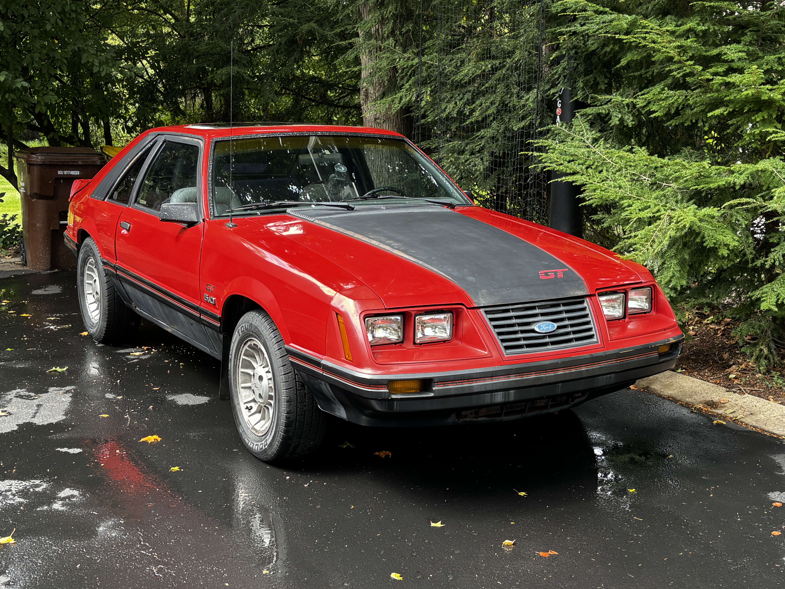

Welcome to Larry's Information Science Portfolio
I'm Larry, I am studying Information Science at Michigan State University and minoring in Business. This is my fifth year here.
This is my portfolio, which will hold all of my projects I will be working on for MI349.

About Me
I chose to go down the route of media and information specifically because of this class. I believe what I learn from this class will put me in a very good position to get a job anywhere. Companies need websites, right?
My Interests
- Anything automotive related. Whether it's working on cars, driving around, or talking about them. I'm down!
- Weight lifting. I go to the gym 5-6 times a week. Sometimes by myself, but mostly with a friend or two.
- Playing video games. My two main games that I play currently are Elden Ring (Top 10 game of all time) and Forza Horizon 6.
- Building and specing PCs. I built my computer back in 2020. My family came together for my birthday and gave me the money to build one and I've been upgrading it ever since.
- I've started to take up videography, as I am the social media manager for MSU Automotive Club. We'll see where it goes. It's been fun since I've started it.